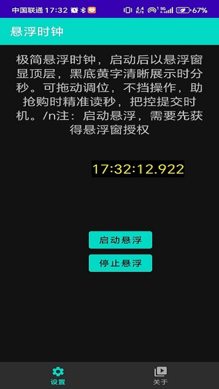
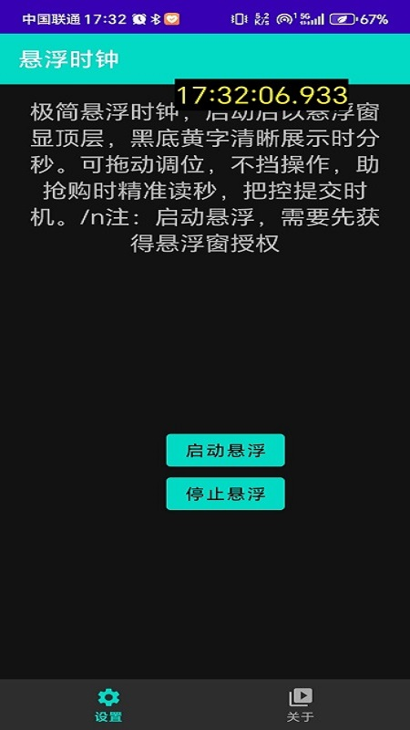

实时秒级显示（模拟效果）
极简悬浮时钟是一款专注于抢购场景的轻量工具，核心功能简洁直接：用户启动后，时钟将以悬浮窗形式显示在手机屏幕顶层，不受其他应用遮挡。
界面仅保留核心时间信息——清晰展示当前时分秒（精确到秒级），数字采用高对比度配色（黑底黄字），确保在各类App界面上都能快速看清。
悬浮窗可随意拖动调整位置，避免遮挡抢购按钮等关键区域；体积小巧不占用过多屏幕空间，却能让用户在浏览商品、填写信息等操作时，实时掌握倒计时动态。
无多余功能干扰，启动即用，专注解决抢购场景下的“秒级时间感知”需求，减少因切换应用看时间导致的延误。


左图：悬浮窗在购物App中的显示效果 | 右图：拖动调整悬浮窗位置演示
黑底黄字设计，在任何App背景下都能快速识别时间，不费眼。
随拖随放，避开抢购按钮/输入框，不遮挡关键操作区域。
无广告、无冗余功能，启动速度快，专注抢购场景需求。